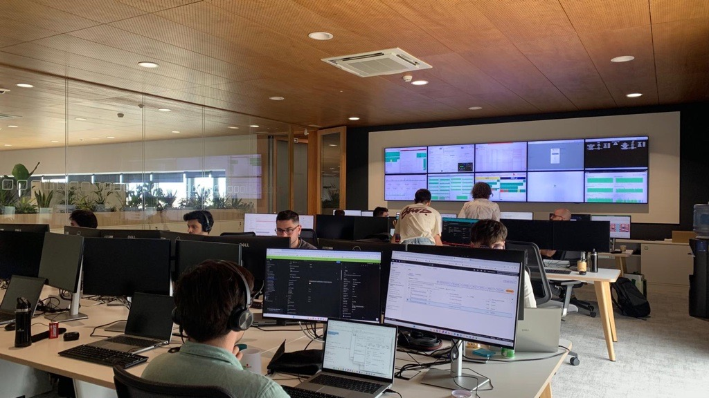

2026
Alicante's office is ready!

the C++ we were all taught to write:
class Shape { // base class
public:
virtual ~Shape() = default; // virtual destructor
virtual float area() const = 0; // virtual interface
};
std::vector<std::unique_ptr<Shape>> scene; // heap, everywhere
scene.push_back(std::make_unique<Circle>(1.0f)); // one alloc per object
if (!sensor.init()) throw InitError{}; // errors = exceptions
textbook-correct in 2005, but is it still the default in 2026?
Modern C++20 lets you move dispatch, allocation, error handling and validation from runtime to compile time, and the result is smaller, faster, and harder to get wrong.
born from embedded constraints, but it's just good design, anywhere
variant, expected, ranges, stack, with -fno-exceptions -fno-rttiarm-none-eabi-gcc 13.2)-Os -flto -DNDEBUG for all firmware numberssame 9 features, same observable behaviour, full firmware build:
| classic | modern | delta | |
|---|---|---|---|
| .text (flash) | 19248 B | 6140 B | −68% |
| unwinder symbols | 46 | 0 | gone |
| heap (malloc on board) | yes | no | gone |
(modern .bss is bigger: +3800 B; its memory is visible at link time
instead of hidden in the heap; we'll come back to this)
| tool | what it measures |
|---|---|
arm-none-eabi-size |
.text, .data, .bss per section |
nm + c++filt |
malloc, vtables, RTTI, unwinder |
readelf -S |
.ARM.extab / .ARM.exidx exception tables |
lizard |
cyclomatic complexity (CCN) |
std::chrono benchmarks |
hot-path cost (host, -Os -flto) |
QEMU mps2-an386 |
both firmwares actually run |
The One where virtual stops being the default answer
the textbook shape hierarchy:
class Shape {
public:
virtual ~Shape() = default;
[[nodiscard]] virtual float area() const = 0;
virtual void scale(float factor) = 0;
};
class Circle final : public Shape { /* ... */ };
using Scene = std::vector<std::unique_ptr<Shape>>; // ptr per shape
float total_area(const Scene& scene) {
float sum = 0.0f;
for (const auto& shape : scene)
sum += shape->area(); // indirect call through the vtable
return sum;
}
measured on demo 01 (nm on the classic object file):
_Znwj / _ZdlPv → operator new/delete: one heap allocation per shape_ZTV... vtables + two __cxxabiv1 typeinfo vtables in flasharea() → indirect branch the optimizer cannot inline throughShape to participateand we pay all of this even when the set of shapes never changes
is your set of types open or closed?
virtual is the right toolmost application and firmware code is closed-set code
std::variant + std::visit// Plain value types — no base class, no virtual, no intrusion.
struct Circle {
float radius;
[[nodiscard]] constexpr float area() const
{ return pi_v * radius * radius; }
constexpr void scale(float f) { radius *= f; }
};
struct Rectangle { /* ... */ };
struct Triangle { /* ... */ };
// The closed set of alternatives IS the polymorphism.
using Shape = std::variant<Circle, Rectangle, Triangle>;
using Scene = std::array<Shape, 6>; // contiguous, on the stack
float total_area(const Scene& scene) {
float sum = 0.0f;
for (const auto& shape : scene)
sum += std::visit([](const auto& s) { return s.area(); }, shape);
return sum;
}
| classic | modern | delta | |
|---|---|---|---|
| .text (ARM, firmware profile) | 1320 B | 232 B | −82% |
| heap allocations per scene | 7 | 0 | −7 |
| vtables + type_info | 5 | 0 | gone |
sizeof(Shape) = largest alternative + index → flat, cache-friendly arrayarea() / scale() can join the variant-O2): classic 276 ms vs modern 82 ms; <memory> + <vector> are not free eitherthis is exactly the redesign Nico Josuttis walks through in "Rethink Polymorphism in C++", C++ on Sea 2025
his punchline: variant-based designs are not a trick, they are value semantics doing polymorphism's job
classic: an interface class, even when every call site knows the type
class IFilter {
public:
virtual ~IFilter() = default;
virtual void reset() = 0;
[[nodiscard]] virtual float process(float sample) = 0;
};
float run_filter(IFilter& filter, std::span<const float> samples) {
filter.reset();
float last = 0.0f;
for (float s : samples)
last = filter.process(s); // indirect call, EVERY sample
return last;
}
template <typename F>
concept Filter = requires(F f, float sample) {
{ f.reset() } -> std::same_as<void>;
{ f.process(sample) } -> std::same_as<float>;
};
struct LowPass {
float alpha;
float state{0.0f};
constexpr void reset() { state = 0.0f; }
[[nodiscard]] constexpr float process(float s)
{ state += alpha * (s - state); return state; }
};
static_assert(Filter<LowPass>); // contract checked HERE
template <Filter F> // generic, specialized per filter, fully inlined
constexpr float run_filter(F& filter, std::span<const float> samples);
no vtable, no virtual destructor, and it runs in constexpr too
| classic | modern | delta | |
|---|---|---|---|
| .text (ARM, firmware profile) | 400 B | 128 B | −68% |
| indirect calls in hot loop | 1 per sample | 0 | inlined |
and when a type doesn't satisfy the contract:
error: static assertion failed
note: the required expression 'f.process(sample)' is invalid
the compiler names the missing method, versus a NULL fptr HardFault at 3am (oh, the drama!)
classic: type erasure taken for granted
class Subject {
public:
using Handler = std::function<void(const Event&)>;
void subscribe(Handler h) { handlers_.push_back(std::move(h)); }
void notify(const Event& e) const {
for (const auto& h : handlers_)
h(e); // type-erased indirect call, per observer
}
private:
std::vector<Handler> handlers_; // heap + possible alloc per capture
};
template <typename H>
concept EventHandler = std::invocable<H&, const Event&>;
template <EventHandler... Handlers>
class Subject {
public:
explicit constexpr Subject(Handlers... handlers)
: handlers_{std::move(handlers)...} {}
constexpr void notify(const Event& event) {
std::apply([&](auto&... h) { (h(event), ...); }, handlers_);
} // ^^^ fold: unrolled, inlined, in order
private:
std::tuple<Handlers...> handlers_; // by value, zero heap
};
Subject subject{on_alarm, on_stats}; // CTAD — no template noise
honest trade-off: the observer set is fixed at compile time; if your wiring is known at build time (most of it is), stop paying for runtime flexibility
stage 1: where most codebases start
class IParticle {
public:
virtual ~IParticle() = default;
virtual void update(float dt) = 0;
/* ... */
};
class PointParticle final : public IParticle { /* x, y, vx, vy */ };
std::vector<std::unique_ptr<IParticle>> particles; // ptr per particle
void update(auto& particles, float dt) {
for (auto& p : particles)
p->update(dt); // pointer chase + vtable call, per particle
}
N heap allocations, N vtable pointers, objects scattered across the heap
struct Particle { // a VALUE — no base class, no vtable
float x, y, vx, vy;
std::uint32_t id;
bool alive; // + 3 bytes padding
};
std::vector<Particle> particles; // ONE allocation, contiguous
void update(std::vector<Particle>& ps, float dt) {
for (auto& p : ps)
if (p.alive) {
p.x += p.vx * dt;
p.y += p.vy * dt;
}
}
id, alive and padding through the
cache to reach the four floats it needsstruct Particles { // Struct of Arrays
std::array<float, max_particles> x, y, vx, vy;
std::array<std::uint8_t, max_particles> alive;
std::size_t count{};
};
void update(Particles& ps, float dt) {
for (std::size_t i = 0; i < ps.count; ++i) {
const float mask = ps.alive[i] != 0u ? 1.0f : 0.0f;
ps.x[i] += ps.vx[i] * dt * mask; // dense floats, branchless,
ps.y[i] += ps.vy[i] * dt * mask; // vectorizer-friendly
}
}
cache lines carry only what the loop reads, and the capacity is a
compile-time budget (.bss), not a heap surprise
4096 particles × 50000 update iterations, x86-64 host (speedup vs stage 1):
| stage | -Os -flto | -O3 -march=native | ARM .text |
|---|---|---|---|
1: vector<unique_ptr<IParticle>> |
1× | 1× | 945 B |
2: vector<Particle> (AoS) |
~2× | ~2× | 365 B |
| 3: Struct-of-Arrays (SoA) | ~2× (≈ AoS) | 4.7–4.9× | 276 B |
-Os
it's noise: measure your loop on your target before restructuring| habit | modern default | measured |
|---|---|---|
| virtual hierarchy, closed set | std::variant + std::visit | .text −82%, heap 7→0 |
| interface class, static dispatch | concepts | .text −68%, inlined |
| std::function observer list | variadic pack + fold | zero heap, zero erasure |
| vector<unique_ptr<Base>> storage | evolve: AoS values, then SoA where hot | ~2× always, ~5× vectorized |
virtual is a specific tool for open sets and ABI boundaries,
not the default shape of every design
The One where errors become values
a telemetry link where ~10% of frames arrive corrupted:
Frame parse_frame(std::span<const std::uint8_t> bytes) {
if (bytes.size() != frame_size) throw BadLength{};
if (bytes[0] != sync_byte) throw BadSync{};
if (bad_checksum(bytes)) throw BadChecksum{};
/* ... */
}
StreamStats process_stream(std::span<const std::uint8_t> bytes) {
for (/* each frame */) {
try {
const Frame f = parse_frame(frame_bytes);
++stats.accepted;
} catch (const std::runtime_error&) {
++stats.rejected; // ← an EXPECTED, FREQUENT outcome
}
}
}
a corrupted frame is not exceptional on a radio link; it's Tuesday
ns per frame, host x86-64, -Os -flto (measured, bench_expected):
| corrupted frames | exceptions | tl::expected | ratio |
|---|---|---|---|
| 0% | 2.2 | 1.7 | 1.3× |
| 1% | 9.4 | 1.4 | 6.6× |
| 10% | 57.4 | 1.2 | 47× |
| 25% | 126.6 | 1.2 | 103× |
| 50% | 429.4 | 2.3 | 185× |
expected costs the same as the happy paththrow is a full stack unwind, and its latency is
not bounded: a real-time system cannot budget for it
firmware-level evidence (readelf, nm on the two ARM images):
| classic firmware | modern firmware | |
|---|---|---|
| .ARM.extab (unwind data) | 128 B | 0 |
| .ARM.exidx (unwind index) | 232 B | 8 B (sentinel) |
| _Unwind / __cxa symbols | 46 | 0 |
| demo 04 .text alone | 993 B | 252 B (−75%) |
the unwinder, the tables, std::string for what(), all on board,
whether or not a single throw ever executes
tl::expectedenum class FrameError : std::uint8_t {
BadSync, BadLength, BadChecksum, OutOfRange,
};
// The full set of outcomes is part of the SIGNATURE:
[[nodiscard]] tl::expected<Frame, FrameError>
parse_frame(std::span<const std::uint8_t> bytes) {
return check_length(bytes) // each step: expected<span, FrameError>
.and_then(check_sync)
.and_then(check_checksum)
.and_then(decode); // reads top to bottom, CCN = 1
}
parse_frame(frame)
.map([&](const Frame& f) { ++stats.accepted; stats.sum += f.reading; })
.map_error([&](FrameError) { ++stats.rejected; });
[[nodiscard]] + the type systemlizard): classic parse_frame 6 → modern 1// today (C++20):
#include <tl/expected.hpp>
tl::expected<Frame, FrameError> parse_frame(...);
// the day you switch to C++23: [C++23]
#include <expected>
std::expected<Frame, FrameError> parse_frame(...);
same API, same monadic operations (and_then / transform / or_else);
tl::expected is a polyfill you retire, not a dependency you keep
(compile time is a non-argument here: 148 ms vs 167 ms on demo 04)
do embedded systems need exceptions at all?
-fno-exceptions everywhere, and everything
in this talk works without themthrow as values") would dissolve the dichotomy, but it has not landed
my position: errors that are normal outcomes (timeouts, bad input, lost
frames) get expected, today. Whether throw still earns a place for the
truly exceptional (corrupted state, broken invariants) is a per-system
decision: measure on your target first; the question stays open
The One with the quick wins batch
consteval → the work simply isn't there anymore (demo 05)// classic: 1 KB table in RAM + boot-time init + a flag checked every call
std::uint32_t crc_table[256]; // .bss — garbage until init runs
bool table_ready = false;
std::uint32_t crc32_compute(std::span<const std::uint8_t> data) {
if (!table_ready) crc32_init(); // runtime branch, every call
/* ... */
}
// modern: consteval CANNOT fall back to runtime — table is in flash
consteval std::array<std::uint32_t, 256> make_crc32_table() { /* ... */ }
inline constexpr auto crc_table = make_crc32_table();
static_assert(crc_table[1] == 0x77073096u); // verified before it ships
static_assert(crc32_compute(/* "abc" */) == 0x352441C2u);
| classic | modern | delta | |
|---|---|---|---|
| .bss (RAM) | 1025 B | 8 B | −1017 B |
| .text + .rodata (flash) | 136 B | 1088 B | table moved to flash |
| boot-time init | ~128k cycles | 0 | gone |
RAM → flash, init function → gone, "is it ready?" hazard → impossible by construction
constinit: the forgotten sibling// mutable runtime state — but its INITIALIZER is compile-time checked
struct CrcStats {
std::uint32_t frames_checked;
std::uint32_t last_crc;
};
constinit CrcStats stats{0u, 0u};
constexpr → constant, immutableconsteval → function must run at compile time
constinit → variable initialized at compile time, mutable at runtime
static-init-order fiasco → ruled out by a keyword, not by a code review
std::bit_cast → type punning, verified (demo 06)// classic: memcpy + runtime assert — checked when it RUNS, debug only
void serialize(const SensorPacket& pkt, std::span<std::uint8_t> out) {
assert(sizeof(SensorPacket) == packet_size); // in .text, too late
std::memcpy(out.data(), &pkt, packet_size);
}
// modern: the wire contract is enforced by the COMPILER
static_assert(sizeof(SensorPacket) == packet_size);
static_assert(offsetof(SensorPacket, reading) == 2);
static_assert(std::is_trivially_copyable_v<SensorPacket>);
static_assert(std::endian::native == std::endian::little);
constexpr PacketBytes serialize(const SensorPacket& pkt) {
return std::bit_cast<PacketBytes>(pkt); // UB-free, constexpr
}
static_assert(float_to_bits(1.0f) == 0x3F800000u); // IEEE-754, checked
.text: 90 vs 92 B; all of that checking ships zero bytes
// classic: 3 loops, 2 intermediate heap vectors, intent buried
std::vector<float> filtered; /* loop 1: filter */
std::vector<float> calibrated; /* loop 2: calibrate */
std::vector<float> output; /* loop 3: window */
// modern: range-v3 today, std::ranges in C++23
auto calibrated_view = raw
| views::filter(in_range) // lazy — no buffer
| views::transform(calibrate); // lazy — no buffer
auto averages = std::span(calibrated.data(), n)
| views::sliding(window)
| views::transform(window_avg); // written into caller storage
// and algorithms instead of hand-rolled loops:
Stats{*ranges::min_element(values), *ranges::max_element(values),
ranges::accumulate(values, 0.0f) / count,
ranges::count_if(values, is_saturated)};
| classic | modern | delta | |
|---|---|---|---|
| .text (ARM, firmware profile) | 1078 B | 558 B | −48% |
| heap buffers | 3 vectors | 0 | gone |
| avg CCN (lizard) | 7.5 | 2.8 | −63% |
| compile time (host −O2) | 239 ms | 451 ms | 1.9× |
std::vector machinery costs more flash than range-v3 pipelines herestd::ranges (views::slide, ranges::fold_left)// classic: unbounded growth, realloc, fragmentation, bad_alloc
std::vector<Event> events;
events.push_back(e); // may move the whole log, may throw
// classic, disciplined: reserve the budget up front
std::vector<Event> events;
events.reserve(64); // no realloc... until event #65
events.push_back(e); // past the budget: silently grows (or throws)
reserve is the right first step, but the budget is a runtime argument the
type forgets, the storage is still on the heap, and overflow is still silent
// modern: capacity is a compile-time budget; storage inside the object
template <typename T, std::size_t Capacity>
requires std::is_trivially_copyable_v<T>
class FixedVector {
[[nodiscard]] constexpr bool push_back(const T& value); // failure = value
std::array<T, Capacity> storage_{};
std::size_t size_{0};
};
static_assert(sizeof(EventLog) ==
log_capacity * sizeof(Event) + sizeof(std::size_t));
.text: 40 vs 38 B; the abstraction is free, the determinism is the winstd::inplace_vector (P0843) standardizes exactly this
modern firmware .bss was +3800 B bigger: now you know why
.bssstatic memory isn't a cost; it's the same memory, made visible
| feature | replaces | win |
|---|---|---|
| designated initializers | positional brace soup | .alpha = 0.3f reads like docs |
operator<=> |
6 hand-written comparisons | one line, consistent by construction |
std::span |
pointer + size pairs | bounds in the type, no decay |
std::string_view |
const char* + strlen |
length carried, constexpr |
[[nodiscard]] |
ignored error codes | compiler-enforced checking |
enum class + using enum |
#define constants |
scoped, typed, readable switches |
std::source_location |
__FILE__ / __LINE__ macros |
type-safe, default-argument capture |
brace init {} |
silent narrowing | truncation = compile error |
if constexpr |
#ifdef ladders |
both branches type-checked |
pattern: each one moves a bug class from runtime to compile time, at zero cost
start tomorrow (zero risk):
enum class, [[nodiscard]]constexpr / consteval tables → move data to flash, delete init codestd::array + std::span → kill pointer+size pairs and raw arraysconcepts on your templates → readable contracts, readable errorstl::expected on new error paths → values, not unwindsstd::variant + std::visitthen, where profiling says it matters: SoA layouts, fixed-capacity containers, variadic wiring, and re-measure after every step
| question | reach for |
|---|---|
| set of types open? (plugins, ABI) | virtual; still the right tool |
| set of types closed? | std::variant + std::visit |
| dispatch known at compile time? | concepts + templates |
| error is a frequent outcome? | expected; never throw |
| error is truly exceptional? | the open question; measure first |
| size known or boundable at build? | std::array / FixedVector, not vector |
| hot loop over many objects? | values first (AoS), then SoA; before threads |
| classic design | modern design | |
|---|---|---|
| dispatch | vtable at runtime | variant/concepts at compile time |
| memory | heap, discovered at runtime | stack/.bss, visible at link time |
| errors | exceptions as control flow | expected; errors are values |
| validation | assert when it runs | static_assert before it ships |
| firmware .text | 19248 B | 6140 B (−68%) |
| behaviour | identical, proven by equivalence tests | |
move the work to compile time; runtime is the most expensive place to find out
std::inplace_vector [C++26]; std::expected [C++23]; std::ranges [C++20/23]this repo: all 9 demo pairs, equivalence tests, benchmarks, Dockerfile
docker build -t cpp-design-talk .
docker run --rm -it cpp-design-talk
cmake --preset host-debug
cmake --build --preset host-debug
ctest --preset host-debug # 9/9 equivalence tests pass
./build/host-release/bench_expected
cmake --preset arm-cortexm4
cmake --build --preset arm-cortexm4
scripts/compare_size.sh build/arm
qemu-system-arm -machine mps2-an386 -nographic -semihosting \
-kernel build/arm/firmware_modern